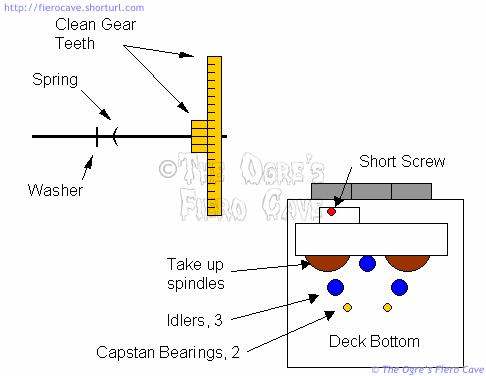

Go Home
Site Map
Go Home
Site Map
GM Radio and Cassette Deck Repairs, Part 2
Like many of you I've been having problems with my OE radio. So I pulled it out to have a look. I say this article is part 2 because there are already a couple nice articles about replacing the belt in the cassette deck. My belt was good but I still had problems. This article is about problems with the rest of the radio and cassette assembly and some stuff to look at when you do the belt replacement.
I understand there are 2 versions of cassette deck used in GM radios. This article is written based on the one with a single tape door. The other one has 2 doors on the tape drive. I haven't seen that one so I can't say for sure just what in this article applies to it or how. (If anyone has a dead two door one that you don't want I'll be happy to dissect it for inclusion in this article.)
Before you tear into the radio check both its fuses. The radio is powered from the Radio and the Bat fuses. The power lead on the main connector is fed from the "Radio" fuse. It's only on when the key is turned to ACC or Run. The orange lead on the 2 wire connector is fed by the Bat fuse and is on at all times.
How long will this take?
It depends on how much you want to do to your radio. If you are planning to keep it awhile then you'll likely want to do as much cleaning as you can in addition to replace the belt if need be. I've done allot of this kind of thing and it still took me 2-3 hours to work out the whole mess. But then I didn't have these notes to start with. The main reason I bothered with this is that I just can't afford a new radio. Even used ones are more than I want to spend just now. Cleaning and soldering don't cost me but a dollar or 3.
Speaker crackle/dropout (Speakers are known good.)
Display dies when parking lights are on
Intermittent power
The problem is likely the Main power/speaker connector. The connector may not be on all the way or you may have cracked the solder joints where the connector is soldered to a little board.
To fix the joints, you have to take off the top and bottom covers, side bracket, and all the screws holding the finned heat sink in place.
There are 2 wires from the connector board to the power switch. You may have to untangle these to move the insulating material out of your way.
Now you can carefully rework the connector. You need a soldering gun in the 100w range. The tricky part is heating the connection fast enough to melt solder but not melt the connector.
This problem isn't hard to fix if you take your time. The radio is built in such a way that the parts all fit in only the right places.
Display dead or
intermittent
Clock dead or loses
time
Radio loses presets
Check the small 2 wire connector, C208, below the antenna plug.
The brown wire tells the radio that the parking lights are on. (The actual dimming control is on the main connector.)
The orange wire is the clock & preset memory power. This wire is fed off the 25 Amp "Bat" fuse and is hot at all times. If this circuit has a problem the radio display will be dead or intermittent. You'll also lose the presets.
How do I reverse the tape direction manually? (Without ejecting the tape.)
On radios with knobs, push the Volume knob. On push button radios, press the "PRG-RCL" button.
Clicking or popping noises from the tape deck.
Check the gear teeth on the flywheels, take-up spindles, and idlers. They get junk jammed in there and click/pop as they hit the lumps. All you who are doing the belt thing should check those gears at the same time.
This is a little tricky because you have to carefully pull the flywheel/capstan out off its bearing. There is a spring washer and a plastic flat washer on each capstan. When you pull it out go slowly to make sure you don't loose these. (They won't fly off but if you drop them you'll likely never see them again.)
When putting it back together make sure the spring is sharp side toward the flywheel and the flat washer goes on after the spring. If you get this wrong it will screw up the bearing.

If the capstans won't come out, soak them with a little alcohol and scrape the crud off them with a finger nail or wood stick. Don't force them or you could make the bearing bind. That junk on the capstan is abrasive.
Warning: If/when you take out the last screw that holds the cassette drive spindles make sure you keep track of it. This screw is shorter than the 3 that hold the plate over the flywheels. If you put the wrong screw in that hole the fast forward button on the deck will jam.
Note: The flywheel & capstan parts are both the same. It's not very critical which one goes into which side. For my deck I put the least worn looking one in the left side. This is the one that drives the tape in the forward direction.
While you are doing all this, don't forget to clean the rubber pinch rollers and head up in the top of the deck. I use 90% isopropyl alcohol for this and just keep wiping the surface until the Q-tip comes out clean. You can get the 90% at any pharmacy. (I like 90% because it dries faster.) I used about 5 Q-tips on my tape deck to clean those parts. This works best if you hold the roller with your finger or a stick while you clean.
NOTE: After you insert the capstans clean the exposed shaft with a Q-tip that is just damp with 70% or stronger isopropyl alcohol. If you don't do this cleaning the oil will pick up stuff that will eat your tapes. (If you use too much alcohol you'll wash the oil out of the bearing.
Bearing Lube.
If you need to lubricate the capstan bearing use Teflon loaded oil. Use a toothpick to put a film of it in the bearing.
Avoid using more than a film of oil. Excess oil will quickly pick up dirt that will have you redoing your nice cleanup job.
Sub Woofer Amp, no power. (Speaker is known to be good.)
I don't have this to test fully. I've only seen parts of it. This should help narrow things down. This is for the factory installed sub amp.
Check the control in the dome light and see if it is working. That dome light isn't the most rugged thing on the planet. Put a jumper across the switch and/or the volume control terminals and see if the amp comes on.
The sub amp is fed from the Antenna power out on the main radio connector. It doesn't have a direct power connection to the rest of the car wiring harness. Check the terminal on the radio with 2 pink wires. (You need the radio on.) If you have power here then the radio and its internal power feeds are good.
If you have an aftermarket radio you likely need to alter the sub amp wiring to feed from the main power terminal on the radio. The Sub amp is normally powered by the OE radio's power antenna output. Your new radio probably won't provide enough power on that line even if it has one.
The "fix" most people are using is to clip the 2 pink wires from the main connector and tie them to the yellow power lead. Keep in mind though that this will effectively kill the power antenna pass through on the sub amp. (The antenna would stay up all the time when the key is on.) So if you are one of the people with a power antenna added or thinking of adding one then you may have to work out a little more wiring besides the sub amp power.
There is a schematic of the sub amp on Oliver's Fiero Pages.